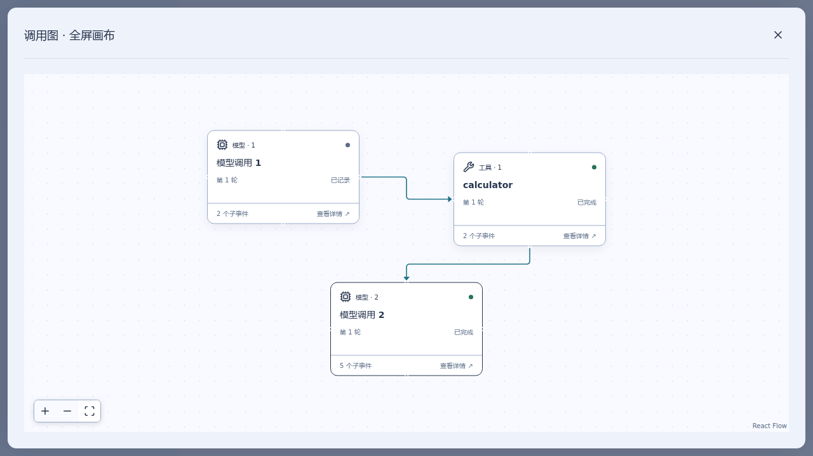
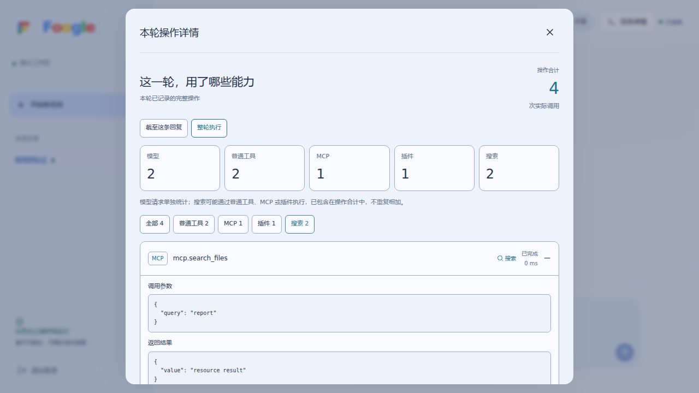
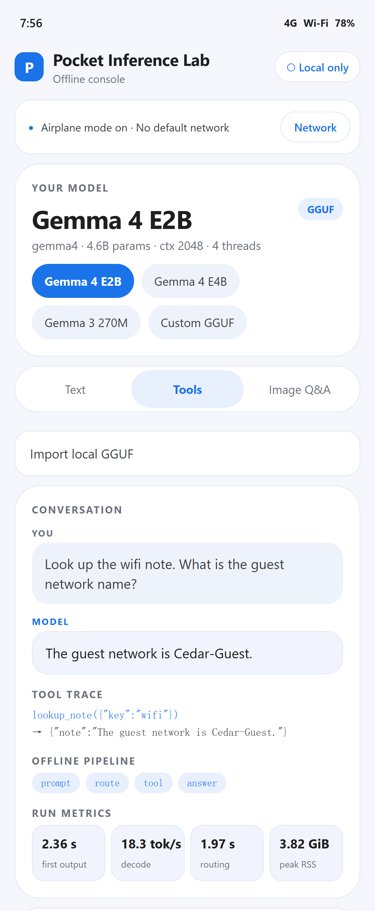

从 Agent 工作台
到端侧离线推理
Foogle 负责发布和执行 Agent，并在调用图里展示每一步。Pocket Inference Lab 让应用在设备上运行模型、调用本地工具和识别图像。
查看项目Web / Android · Agent 编排与运行追踪
Foogle
管理员配置模型、工具和调用预算，再发布 Agent 版本。成员在工作台发起任务、处理工具审批，并通过调用图查看模型、工具、MCP 和插件的参数与结果。
查看 Web 与 Android 全功能云端任务怎样执行
- Web / AndroidReact 共享客户端
- FastAPI鉴权、提交任务、读取事件
- PostgreSQL会话、队列、租约与执行事件
- 独立 Worker领取任务并驱动 ADK Runner
浏览器关闭后，独立进程可继续执行已领取的任务。重新连接时，界面可通过 SSE 从已读游标续读事件。ADK Runner 按已发布版本调用模型和工具，状态 SDK 将会话状态、事件和平台消息投影写入同一事务。




验证范围
仓库记录了 Web 上的真实 DashScope qwen-plus 工具调用闭环，以及 Android 15 模拟器上的安装、真实工具对话和重开后的历史恢复。Web 全栈回归还使用 Mock 模型覆盖确定性流程。物理手机和 iOS 的完整验收仍待完成。
Android SDK / 桌面 CLI · 端侧推理
Pocket Inference Lab
Android SDK 通过 JNI 调用 C++ 运行时，桌面 CLI 共用同一套 Session API。设备通过 llama.cpp 载入本地 GGUF 权重，流式输出文本。图像问答需要视觉模型及与之匹配的 mmproj 投影文件。

文本生成
模型权重已在设备上时，运行时可以在断网状态下生成回复。Android 和桌面入口都能记录首段输出延迟和生成速度。
本地工具
模型从已注册工具中提出调用，运行时校验工具名和参数，宿主应用负责权限与执行。工具结果再交给模型生成回答。
图像问答
视觉模型和投影文件在本地编码所选图片。验证使用同一个问题识别不同颜色的样例，并检查回答是否随图片变化。



离线验证结果
桌面 Linux · Gemma 4 E2B IT Q4_0
Intel Core i7-14700，4 个 CPU 线程，2,048-token 上下文，桌面样本。
- 文本首段输出
- 182 ms
- 持续解码速度
- 18.5 tok/s
- LLM 评测通过
- 5 / 5
Android 15 模拟器 · 飞行模式
x86_64 / API 35，关闭 Wi-Fi 和移动数据。各场景使用记录中的独立样本。
- Gemma 3 文本首段
- 0.47 s
- Gemma 3 工具回答首段
- 1.90 s
- SmolVLM 红 / 蓝图识别
- 5.85 / 8.67 s
这些数值来自桌面和模拟器测试。真机的持续性能、内存与发热仍需用目标设备验证。
Foogle 接入本地 Gemma
Foogle 通过 OpenAI 兼容接口连接 llama-server 上的 Gemma 4 E2B。模型提出计算器调用，Foogle 的 Agent 执行工具，浏览器收到了流式回复，并在调用图中显示 calculator 节点。
- 发送任务
17 × 23 - 调用工具
calculator - 返回结果
391